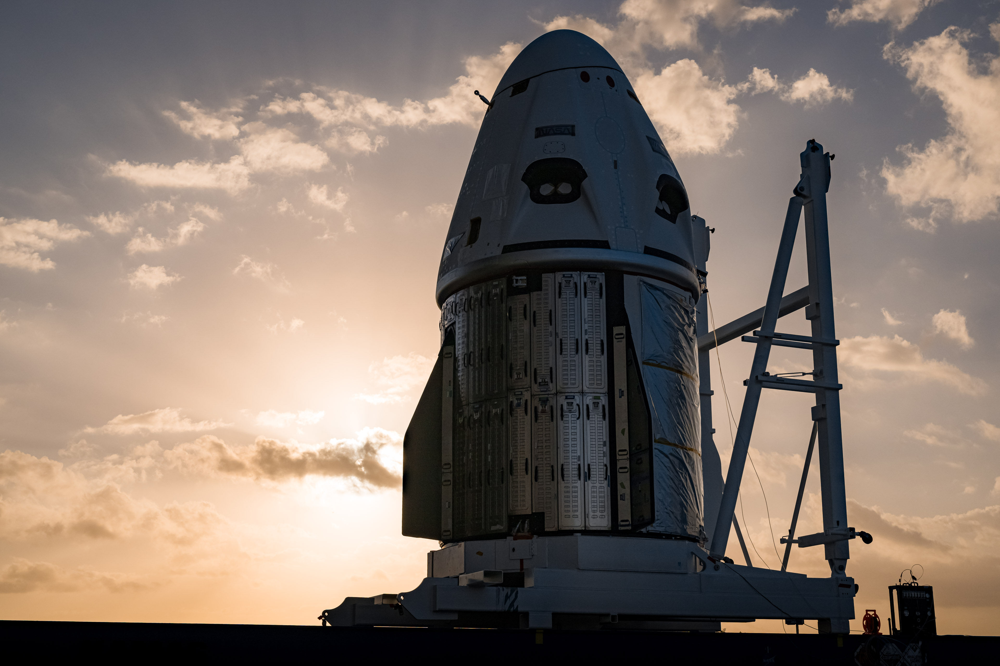

La SpaceX Dragon, también conocida como Dragon 1 o Cargo Dragon, fue una clase de nave espacial
reutilizable de carga desarrollada por SpaceX, una empresa de transporte espacial estadounidense. La Dragon
era lanzada a bordo del cohete Falcon 9 de la compañía para reabastecer a la Estación Espacial Internacional
(ISS). Posteriormente fue sustituida por la SpaceX Dragon 2.
OBJETIVOS
Esta nave sirve como una de las dos naves espaciales que transporten tripulaciones hacia y desde la ISS
bajo el Programa de Tripulación Comercial de la NASA, siendo la otra el Boeing CST-100 Starliner, que
aun tiene pendiente su certificación para vuelos comerciales; ambas naves sucedieron a las capacidades
de transporte orbital de la tripulación del transbordador espacial que se retiró del servicio en 2011.
También se espera que sea utilizado en vuelos por la compañía estadounidense de turismo espacial Space
Adventures y para transportar turistas hacia y desde la estación espacial planeada por Axiom Space.

Hay dos variantes: Crew Dragon y Cargo Dragon. Crew Dragon se llamó inicialmente
"DragonRider" y desde el principio se pretendía apoyar a una tripulación de siete o una combinación de
tripulación y carga. Es capaz de realizar reuniones y acoplamiento completamente autónomos con
capacidad de anulación manual, utilizando el Sistema de acoplamiento de la NASA (NDS). Para misiones
típicas, Crew Dragon permanecerá acoplado a la ISS por un período de 180 días, pero está diseñado para
permanecer en la estación hasta 210 días, coincidiendo con la nave espacial rusa Soyuz. Desde el
comienzo del proceso de desarrollo, SpaceX planeó utilizar un sistema de escape de lanzamiento de empuje
integrado para la nave espacial Dragon.
- 

MISIÓN
La cápsula Dragon procedente de la Estación Espacial Internacional (EEI) en la que viajaban cuatro
astronautas cayó en las últimas horas del lunes 08.11.2021 en el Golfo de México, frente a la costa de
Florida, según la retransmisión en directo difundida por la NASA.
Después de 24 horas de vuelo, la nave espacial Dragon Endeavour con cuatro astronautas de la misión
Crew-6 de la Nasa y SpaceX han llegado este viernes a la Estación Espacial Internacional (ISS) cuando
ésta se encontraba a 418 kilómetros sobre el Océano Índico frente a la costa este de Somalia.
Los astronautas de la Nasa Stephen Bowen y Woody Hoburg, junto con el astronauta de los EAU (Emiratos
Árabes Unidos) Sultan Alneyadi y el cosmonauta de Roscosmos Andrey Fedyaev se integraron en la
tripulación de la ISS formada por los astronautas de la Nasa Frank Rubio, Nicole Mann y Josh Cassada,
así como Koichi Wakata de JAXA (Agencia de Exploración Aeroespacial de Japón) y los cosmonautas de
Roscosmos Sergey Prokopyev, Dmitri Petelin y Anna Kikina. Durante un corto periodo de tiempo, el número
de tripulantes ISS será de 11 personas hasta que abandone la estación la Crew-5.
 La próxima misión tripulada de SpaceX a la Estación Espacial Internacional está programada para lanzarse
en septiembre con dos astronautas de la NASA, un cosmonauta de JAXA y un cosmonauta ruso. Este será el
quinto vuelo de la tripulación comercial de la NASA hasta ahora después del lanzamiento de Crew-4 a la
estación en abril.
La próxima misión tripulada de SpaceX a la Estación Espacial Internacional está programada para lanzarse
en septiembre con dos astronautas de la NASA, un cosmonauta de JAXA y un cosmonauta ruso. Este será el
quinto vuelo de la tripulación comercial de la NASA hasta ahora después del lanzamiento de Crew-4 a la
estación en abril.